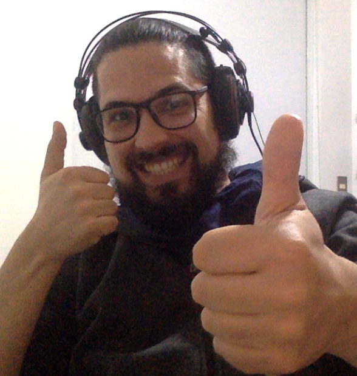

Guilherme Giacomini Teixeira

Este sou eu feliz por estar fazendo o curso da TRYBE e codando este site.
Estudante de desenvolvimento de Web Software na Trybe.
Nascido em Santa Maria - RS, mas atualmente catarinense
de coração,
moro em Balneário Camboriu - SC
Habilidades:
- Empatia
- Vontade de ajudar
- Organização
- Autoditatismo
Clique aqui para ver a foto de perfil
Clique aqui para assistir a vídeos incríveis sobre
programação com o
pessoal do Código Fonte.
- Título
- Habilidades
- Links com conteúdo de programação